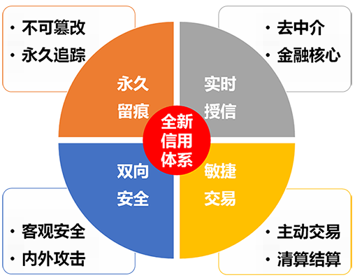
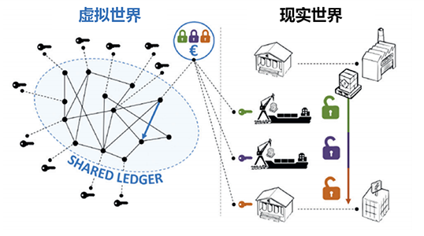

当前位置：什么是区块链
前一个：意义及前景
区块链是一种去中心化的分布式记账技术
从技术角度看：区块链是指将加密数据（区块）按照时间顺序进行叠加（链）生成的永久、不可逆向修改的记录。
从商业角度看：区块是指已执行并验证的交易信息，链是指记录所有交易的账簿，所有账簿叠加在一起形成区块链。
区块链具有安全、不可篡改、信息透明、去中心化等核心优点，可以完美解决现实世界中现实资产向虚拟资产的真实映射，改变交易流程和记录保存的方式，适用于涉及所有权的资产，促进产业链整合，助力共享经济。
Q：区块链的技术有什么用？
A：可以大规模用于B2B或者C2C行业中，由多方参与，共同验证与共识，提升数据的可靠性，增强业务结合度。比如数字货币、股权私募、数字资产、供应链金融、清结算等。
Q：区块链为什么安全？
A：区块链网络不依赖单方的机构存在状态、单方的云服务网络或系统故障、单方的黑客攻击等影响区块链网络的数据，在任何区块链网络中，哪怕小部分参与者出现任何问题都不会影响区块链网络的服务安全。因此，可应用于稳定、安全性要求较高的行业。
Q：区块链为什么好？
A：区块链具有去中心、去信任等核心优点，可以完美地解决共享经济发展过程中的信息不对称、交易成本高、陌生人信任等难题，使得“个体经济”成为可能。
Q：什么是去中心化？
A：区块链数据不依赖某个中心机构存储，只要互联网存在，区块应用还有一个参与者，信息都将永远保存在互联网络上。
Q：什么是去信任？
A：参加验证的参与方在授权下可以明文的看见区块链的公有信息，非常适合很多信息不对称的行业。比如医疗健康档案、个人信用档案等。
Q：区块链怎么用？
A：区块链应用有三个层次：一是当货币用，支撑去中心化交易和支付系统；二是当担保用，通过智能合约支撑行业应用；三是当档案库用，支撑去中心化的社会体系。
Q：比特币没有中心怎么运作的？
A：区块链技术用数据区块（Block）取代了目前互联网对中心服务器的依赖，使得所有数据变更或者交易项目都记录在一个云系统之上。
Q：区块链能带来什么好处？
A：区块链能像2000前互联网网络协议一样极大地改变人们的生活。首先区块链可以大大降低社会的信用成本，信用成本是商业社会最高的成本，通过区块链的技术，可以大大降低再次、多次的信用认证，提高工作效率。其次，区块链可以拓宽我们的思路，将传统中心化的商业模式，以区块链的眼光重新审视，势必会获得更多的商业机会。